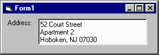

Table of Contents
Introduction
The primary purpose of this control is to allow users to view and enter U.S. postal addresses. This document provides help for programmers on how to use the control in user applications. It is directed at VB programmers, but the control can be compiled to an OCX and used with other systems that support OCXs.
Many business applications require users to enter postal addresses. These addresses are typically stored in databases. Some database tables are designed to store the address in separate fields: street address, lines 1 and 2, city, state, zip code, and zip code extension. Other tables are designed to store the entire address as one field. To make processing simple and consistent, programmers building a data entry form for the separate-field approach typically place one text box for each of the separate database fields. Unfortunately, this is cumbersome for most users, who would generally rather have a single, multi-line text box. It also tends to take up much more space on a form than a single text box with the whole address would.
 The PostalAddress control does just that. You can include this control (see the screen shot to the right) on a form just as you would a single multi-line text box. They look and act almost identically. But your user code will never have to read from the text box to discover the discrete parts of the address. The control offers these values, which it parses out for you, as public properties.
Because this control allows users to enter addresses free-form, it's necessary for this control to not only parse out the fields, but also to validate what the user has typed. It does this and provides useful error messages to the user code. This validation and parsing happens with every keystroke in and change to the text box, but is fast enough to be unnoticeable by your users. The control is forgiving of a number of common entry mistakes and even cleans up after them when the user leaves the control.
In addition to checking the address entered for basic formatting validity, this control maintains a code-alterable list of state abbreviations and names for validation and lookup. This list comes from the U.S. Post Office's web site (http://www.usps.gov). You could even enter a state's name in this control instead of its abbreviation and it will do a look-up for you.
It's worth pointing out that beyond the state abbreviations, this control does not "validate" the data in the sense of confirming that the address entered really exists. It doesn't even so much as confirm that the city is a real one. To do this more complete kind of validation requires massive amounts of constantly changing data, and few applications demand that level of validation.
This control does not depend on any modules or libraries beyond the one that comes standard with Visual Basic.
Applying this Control
Let's start with a typical usage: a database table data editor. To populate Address1 with the contents of, say, an ADO recordset named rs, you might use code similar to the following:
Each of these lines will cause the control's display to be updated with the new total address (i.e., the value Address1.Address returns). You can do the reverse (e.g., rs("AddrCity") = Address1.City ) to get the data from the control back into your recordset.
Our application would be pretty bad without some validation, so let's consider that. There are three basic times when validation would matter: when the user types a character in or does anything to alter the text in the control, when the user leaves the control, and during later processing of the containing form. The first two correspond to the Change and LostFocus events the control raises, respectively. For our purposes, let's consider the second case. Here's a sample:
The first condition tests to make sure the control is happy that the address is valid. The second condition tests to make sure the address meets the particular business requirements of this application -- in this case, that the city is not more than 20 characters long; a common sort of constraint for databases.
Many applications these days will allow you to enter a zip code and will then automatically return a city and state. While the PostalAddress control doesn't offer this feature directly, you can add it using your own lookup routine. Consider the following example:
This should work, provided the last line of the address entered is just a zip code. Be aware, though, that that address, without the city and state, will be considered by the control to be invalid. All else being correct, it should be valid once .City and .State are set by your code. It would be prudent to check .IsValid some time after the city and state are set.
Although the PostalAddress control has its own user interface, this does not preclude it from being used without one as an ordinary class. For example, if you have a grid control or some other control that has its own data entry user interface, it could be difficult to overlay this otherwise ordinary text box onto that control and deal with the complexities of that. For our purposes, let's say we have a multi-line TextBox control for address entry called Text1 and Address1 is hidden. Here's how we might make use of the PostalAddress control for this:
Another example would be a batch processing program. Let's say we want to pick the address parts out of addresses in one table's one-field address to put them in another's multi-field address. Provided we have two recordsets, rsSource and rsDestination, here's what we might do for the current record:
While not a pure superset of the TextBox control, the PostalAddress control offers many of the same public properties and events that it offers. You could change the font, set the background color, programmatically control which characters are highlighted using .SelStart and .SelLength, or alter a number of other properties. You can even trap mouse and keyboard events. One property that's unfortunate in its operation is .ToolTipText. For technical reasons, you can set this at design time using VB's properties window, but not effectively at run-time.
Public Declarations
ValidationErrors
ValidationErrors
Public Properties
Address |
BackColor |
BorderStyle |
City |
Enabled |
Font |
ForeColor |
IsEmpty |
IsValid |
RawText |
SelLength |
SelStart |
SelText |
State |
StateCount |
Street |
StreetLine1 |
StreetLine2 |
ValidationError |
ValidationErrorCode |
Zip |
Zip4
IsValid
IsEmpty
Address
StreetLine1
StreetLine2
Street
City
State
StateCount
Zip
Zip4
ValidationError
ValidationErrorCode
RawText
(Standard Properties)
Public Methods
AddState |
Clear |
ClearStates |
FindStateByAbbreviation |
FindStateByName |
Populate |
StateAbbreviation |
StateName
Clear
Clear the text box and thus all basic data properties (e.g.,
City). Since this forces validation like any other changing
of the text box's contents, .IsValid will be False and the
validation error will have an appropriate message.
Populate
Populate all the data properties in one step. This is simple, but
it also helps to avoid strange problems that can happen during
the refresh that follows setting one of the properties when the
address is invalid.
ClearStates
Clear out the lists of state abbreviations and names to make way
for new ones using .AddState().
AddState
Add a state to the end of the internal list.
StateAbbreviation
Identify the state abbreviation associated with the specified
list index. Since the list is zero-based, the index must be
in the range 0 to .StateCount - 1.
StateName
Identify the name of the state associated with the abbreviation.
A typical use of this is:
FindStateByAbbreviation
Returns the zero-based list index of the specified state, if
found. Returns -1 if not found.
FindStateByName
Returns the zero-based list index of the specified state, if
found. Returns -1 if not found.
Public Events
Revision History
PostalAddress 1.0
PostalAddress 1.1
Credits
Here is some help for the programmer on how to use this control in his own applications. For a demonstration, execute the demo program. You can view and play with the source code for this demo in the PostalAddress_Demo.vbp VB 6 project. For discussion here, let's assume we have a form called Form1 with one PostalAddress control called Address1 on it.
Address1.StreetLine1 = rs("AddrStreet1")
Address1.StreetLine2 = rs("AddrStreet2")
Address1.City = rs("AddrCity")
Address1.State = rs("AddrState")
Address1.Zip = rs("AddrZip")
Address1.Zip4 = rs("AddrZipExten")
Private Sub Address1_LostFocus()
If Not Address1.IsValid Then
MsgBox "Invalid address: " & Address1.ValidationError
Address1.SetFocus
Exit Sub
End If
If Len(Address1.City) > 20 Then
MsgBox "Invalid address: City may not be more than 20 characters"
Address1.SetFocus
Exit Sub
End If
End Sub
Private Sub Address1_LostFocus()
Dim City As String, State As String
If Address1.Zip <> "" And Address1.City = "" And Address1.State = "" Then
'Our handy dandy lookup routine
If GetCityState(Address.Zip, City, State) Then
Address1.City = City
Address1.State = State
Else
MsgBox "Invalid address: No such zip code"
Address1.SetFocus
Exit Sub
End If
End If
End Sub
Private Sub Text1_LostFocus()
Address1.Address = Text1.Text
If Not Address1.IsValid Then
MsgBox "Invalid address: " & Address1.ValidationError
Text1.SetFocus
Exit Sub
End If
Text1.Text = Address1.Address
End Sub
Address1.Address = rsSource("Billing_Address")
If Address1.IsValid Then
rsDestination("BAStreet1") = Address1.StreetLine1
rsDestination("BAStreet2") = Address1.StreetLine2
rsDestination("BACity") = Address1.City
rsDestination("BAState") = Address1.State
rsDestination("BAZip") = Address1.Zip
rsDestination("BAZipExten") = Address1.Zip4
End If
The PostalAddress control offers the following public declarations:
Public ValidationErrors As Variant
This is an array containing the complete list of error codes and their messages, which are
used to populate .ValidationError.
.ValidationErrorCode. will contain an
index to this array. Those list items that include ???? in them
will have error-specific information in place of ???? when they
are used to populate .ValidationError.
User code may alter the contents of this array to provide custom error messages.
In addition to the properties implicitly available through Visual Basic, like .Height and .TabIndex, the PostalAddress control explicitly offers a number of publicly available properties:
Read-Only, Boolean
This indicates whether or not the control considers the address to
have a valid format and a recognized state code. Since one's own
program may have other validation rules (such as maximum length for
the city name), these might best be implemented by checking the
relevant data properties (e.g., Len(PostalAddress1.City) <= 20 )
Read-Only, Boolean
This address may be optional in your application. This property
identifies whether or not this control has any data in it at all.
It does this by simply seeing if all the publicly-available data
properties are blank.
Read / Write, String
The parsed and reassembled address. While it may look like the
same thing that the user typed into the text box, it is not
necessarily so. It is instead constructed using the parsed-out
basic parts of the address. Setting this property causes the
text box to be populated verbatim and that to then be parsed.
New-line character combinations (<CR><LF>) separate the two or
three lines.
Read / Write, String
The first of at least one and at most two lines representing
the building number, street name, and any addition stuff like
suite number.
Read / Write, String
The optional line two of the street address. If there is no
line two, this will be blank. See .StreetLine1 for more.
Read / Write, String
The simple combination of street address lines one and two,
with a new-line character combination (<CR><LF>) between them if there
is a second line.
Read / Write, String
The city, which is basically everything in the text box before
the state (usually, but not necessarily, followed by a comma
before the state).
Read / Write, String
The two-character state code (e.g., "AK").
Read, Integer
The number of states in the internal list.
Read / Write, String
The first (or only) five digits of the ZIP code.
Read / Write, String
If the zip code is an extended one, this will be the four
digits following the first and the dash (e.g., "62542-7311", where "7311" is what .Zip4 containts).
Read-Only, String
If .IsValid = False, this contains a terse explanation of
what's most obviously wrong with the address. See the
.ValidationErrors
array declaration for the list of errors.
Read-Only, Integer
This contains the index of the error in the .ValidationErrors array or -1 if .IsValid = False.
Read / Write, String
While .Address provides the "real" address, this allows the
containing program to see what's actually in the text box.
The following properties have meanings essentially identical to those offered by the standard TextBox control. Please review VB's help for details.
In addition to the methods implicitly available through Visual Basic, like .SetFocus and .Move, the PostalAddress control explicitly offers a number of publicly available methods:
Sub Clear()
Sub Populate(ByVal StreetLine1 As String, ByVal StreetLine2 As String, ByVal City As String, ByVal State As String, ByVal Zip As String, ByVal Zip4 As String)
Sub ClearStates()
Sub AddState(ByVal Abbreviation As String, Name As String)
Function StateAbbreviation(ByVal Index As Integer) As String
Function StateName(ByVal Abbreviation As String) As String
X = PostalAddress.StateName(PostalAddress.State)
Function FindStateByAbbreviation(ByVal Abbreviation As String) As Integer
Function FindStateByName(ByVal Name As String) As Integer
The PostalAddress control raises a subset of the standard events the TextBox control raises. Please refer to VB's documentation for more information. In addition to these, a number of others are automatically raised, like LostFocus(). These are the events explicitly supported:
Released 17 May 2000
Initial release
Released 22 May 2000
Updated parser engine to accommodate many more bad or incomplete address formats. Also added .ValidationErrors public array and .ValidationErrorCode property.
Versions 1.0 - 1.1 of the PostalAddress control was created by James Vincent Carnicelli. Documentation was prepared by same.